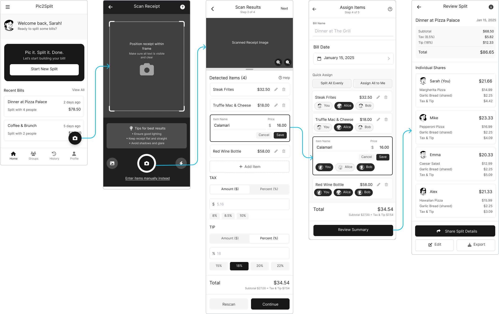
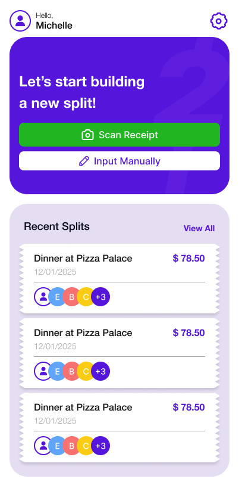

Existing tools created friction exactly where users needed speed and trust
Through user interviews, heuristic evaluations of competitors, and market research, we identified three critical gaps in existing bill-splitting solutions: tedious manual entry, error-prone tax and tip calculations, and high adoption friction for one-time group use.
Apps like Splitwise require users to type every item and price by hand, turning one dinner into 5–10 minutes of cleanup work.
Proportional tax and tip calculations across multiple people are error-prone and stressful to verify.
Requiring a group to download an app and create accounts for one meal creates immediate drop-off.

"Manual bill splitting breaks social flow and creates financial awkwardness at the worst moment."
"Design a scan-to-split experience so fast and intuitive it disappears into the background."
Three goals guided the MVP scope and every design decision
The research findings shaped a focused set of design goals that defined what success looked like — not just for the final product, but for each sprint and screen decision along the way.
Zero friction
Build a web-first product so groups can use it immediately without downloads or forced account creation.
Speed
Reduce a 5–10 minute manual splitting task to seconds by using OCR as the starting point instead of typing.
Accuracy and trust
Design clear correction and error-handling flows so users stay confident when AI or OCR gets something wrong.
From research to a polished, trust-building AI utility
The core challenge was turning a technical backend process — from upload to AI parsing to shared math — into a user journey that felt effortless and transparent. The work moved through four phases: research, user-flow mapping, wireframing edge cases, and usability-driven iteration.
Evaluated competitors to document where tax, tip, shared items, and navigation created confusion and drop-off.
Designed an 18-screen flow that made upload, AI extraction, assignment, math, and sharing feel like a clear progression.
Specified labels, empty states, and rounding logic so ambiguous moments were handled before visual polish.
Used participant feedback to redesign correction, tax/tip input, and overall visual quality.
Most competitors hid the hardest part of the experience
I began by evaluating existing apps on the market and documenting navigation blockers and confusing architectures in a heuristic evaluation matrix. The review showed that shared items, proportional adjustments, and late-stage corrections were either buried or manually intensive — exactly where users needed the most confidence.
Pic2Split had to make the "hard math" visible and understandable rather than hiding it behind a generic final total.

A technical backend process reframed as a guided sequence
The backend flow was complex: Upload, AI processing, data extraction, user assignment, tax/tip math, and sharing. The UX goal was to make those steps feel linear, lightweight, and legible to first-time users while keeping progress clear at every stage.

Edge cases were part of the product, not just the polish phase
Low-fidelity wireframes clarified the product requirements early, including naming, onboarding, and rounding logic. This helped keep later UI work grounded in concrete product behavior instead of only visual polish.
- Clear labels: Distinguish between "Group Name" and "Member Name."
- Friendly empty states: Help new users understand how to begin.
- Rounding logic: Automatically assign the 1–2 cent difference to the largest spender.

Usability testing revealed the three biggest trust gaps
October 2025 testing with 6 participants produced an average completion time of 4:30–5:38 minutes. The feedback made it clear that speed alone was not enough — users also needed stronger trust signals, clearer inputs, and a more polished interface before they would rely on the output.

"The accuracy — it's terrible. The entries often show up incorrectly." (P5) — Added a tap-to-edit correction flow so users could fix OCR mistakes without losing progress or confidence.
Users were unsure whether they were entering a flat dollar amount or a percentage. — Introduced a clear $ / % toggle with a real-time preview before the split was finalized.
"Looks like something made by college students — it's very rough and feels unfinished." (P5) — Reworked the visual identity with stronger contrast, clearer hierarchy, a trusted blue-and-white palette, and more polished UI details.
The final experience focused on assignment clarity, transparent math, and shareability
The solution work centered on reducing user effort while increasing trust. Each major interaction was designed to make the system feel more legible: assignment became tactile, math became transparent, and sharing became effortless.



Smart assign by item
Users loved the item-assignment interaction. Instead of manually splitting totals at the end, they could tap a food item and then tap a friend's avatar, linking the cost proportionally while keeping the mental model simple.
"I really like the assign people by items feature."
This section is structured so a future GIF or short muted video loop can replace the static mockup without changing the layout.
Transparent split details
The dashboard breaks down exactly who owes what, including each person's share of tax and tip. By exposing the math instead of hiding it, the design makes the split feel fair, checkable, and socially easier to accept.
Per-person totals feel verifiable because users can see the breakdown, not just the outcome.
The $ / % distinction and live preview reduce tax and tip uncertainty before users commit.
Instant web sharing
Because Pic2Split is web-based, the host can send a static link, a QR code, or an exported image directly into a group chat. The split result is immediately accessible to everyone else without app installs, passwords, or extra setup.
The visual system that made the product feel trustworthy and polished
After usability testing, part of the iteration work focused on visual polish. These artifacts show how the product language was refined into a more consistent, recruiter-ready system with clearer hierarchy, stronger contrast, and a cleaner blue-and-white UI direction.


Designing for AI unpredictability became the core UX lesson
Designing Pic2Split was a lesson in accepting that AI systems will never be perfectly predictable. The strongest UX decision was not pretending errors would disappear, but giving users an intuitive way to correct them without friction.
Designed
Participants
Launch Timeline
A receipt can be crumpled, the print can be poor, and OCR can still misread. The strongest UX decision was not pretending those errors would disappear, but giving users an intuitive way to correct them without friction.
Close collaboration with React and Spring Boot engineers also sharpened how I balanced ideal flows against latency, technical constraints, and loading-state expectations.

Manual bill splitting became a lightweight web flow
Pic2Split transformed a tedious manual chore into a streamlined, automated process with zero app downloads and clear tax/tip math.
A functioning MVP launched within four months
The team designed, developed, and successfully launched the product in a fast-paced Sep–Dec 2025 timeline.
Designed to expand beyond dining
While V1 focuses on restaurant bills, the architecture and UX can grow into group travel, co-living expenses, and corporate event sharing.